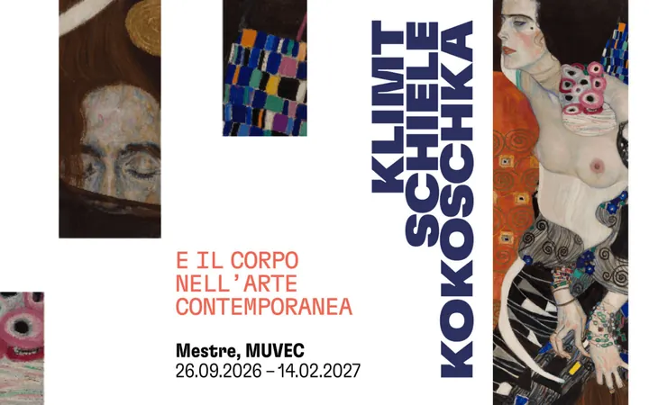

da sab 26 set a dom 14 feb
Klimt, Schiele, Kokoschka and the Body in Contemporary Art
Il corpo, reso con stile personale, è protagonista nelle figure nude di Gustav Klimt , raffinate, seducenti e inquiete interpreti delle riflessioni di inizio Novecento tra arte, psicologia e letteratura. E ancora, il corpo scarnificato di uomini e donne, che diventano quasi…
 Indicazioni
Indicazioni
- Costi e prenotazioni
- Costo non indicato · Prenotazione non indicata
- Programma
- Programma da verificare. Apri la fonte ufficiale per orari e possibili aggiornamenti.
- In caso di maltempo
- Nessuna indicazione specifica pubblicata.
- Note
- Acquisito automaticamente dalla fonte.
L’EVENTO
Descrizione completa
Il corpo, reso con stile personale, è protagonista nelle figure nude di Gustav Klimt , raffinate, seducenti e inquiete interpreti delle riflessioni di inizio Novecento tra arte, psicologia e letteratura. E ancora, il corpo scarnificato di uomini e donne, che diventano quasi manichini disumanizzati, è al centro delle opere di Egon Schiele , nelle quali emerge con forza il rapporto con la nascente psicanalisi. Ai due Maestri della Secessione viennese si aggiunge il genio fantastico di Oskar Kokoschka che, con una pittura vibratile ed espressionista, racconta le inquietudini di un’epoca giunta alle soglie della Prima Guerra Mondiale.
Il tema del corpo come rappresentazione e come simbolo, legato alla carne e alla psiche, non tramonta, ma ritorna con prepotenza nel periodo tra le due guerre, tra censura e felici espressioni di libertà, per poi tornare di nuovo centrale nella riflessione contemporanea .
Un filo rosso collega la filosofia, la psicanalisi, l’antropologia, la letteratura e le arti visive sviluppatesi in Austria e soprattutto a Vienna nei primi anni del Novecento (quella città che Karl Kraus definì “laboratorio per la fine del mondo” ) alle rivoluzioni degli anni Sessanta e Settanta, che hanno gettato le basi del nostro presente. L’arte di rottura e contestazione, dal Nouveau réalisme , all’ Arte Concettuale , fino alla Body art e alle performance , ha recuperato la centralità del corpo traendo nuova linfa dalla lezione, brillante e tragica al contempo, della Vienna fin de siècle.
Nell’arte contemporanea il corpo emerge come campo di battaglia per eccellenza: dalle ironiche Sculture viventi di Piero Manzoni , alle mistiche Antropometrie di Yves Klein .
Il corpo si fa strumento dell’arte e diventa anche messaggio politico nelle opere di geniali interpreti della Body Art quali Ana Mendieta e Gina Pane . La pelle, la carne, il sesso e la fisicità diventano i mezzi perfetti per esprimere nuove inquietudini, che sono collettive, come la lotta al conformismo sociale, e al contempo individuali, dettate dal desiderio struggente di essere visti e di essere amati.
IL PROGRAMMA
Programma e orari
Appuntamenti raccolti dalle fonti elencate. Dove manca un orario, non è ancora disponibile in questa scheda.
Programma pubblicato
- 2026-09-26 — 2027-02-14 ·
INFORMAZIONI UTILI
Prima di partire
- Controllare la fonte prima di partire.
ORGANIZZAZIONE